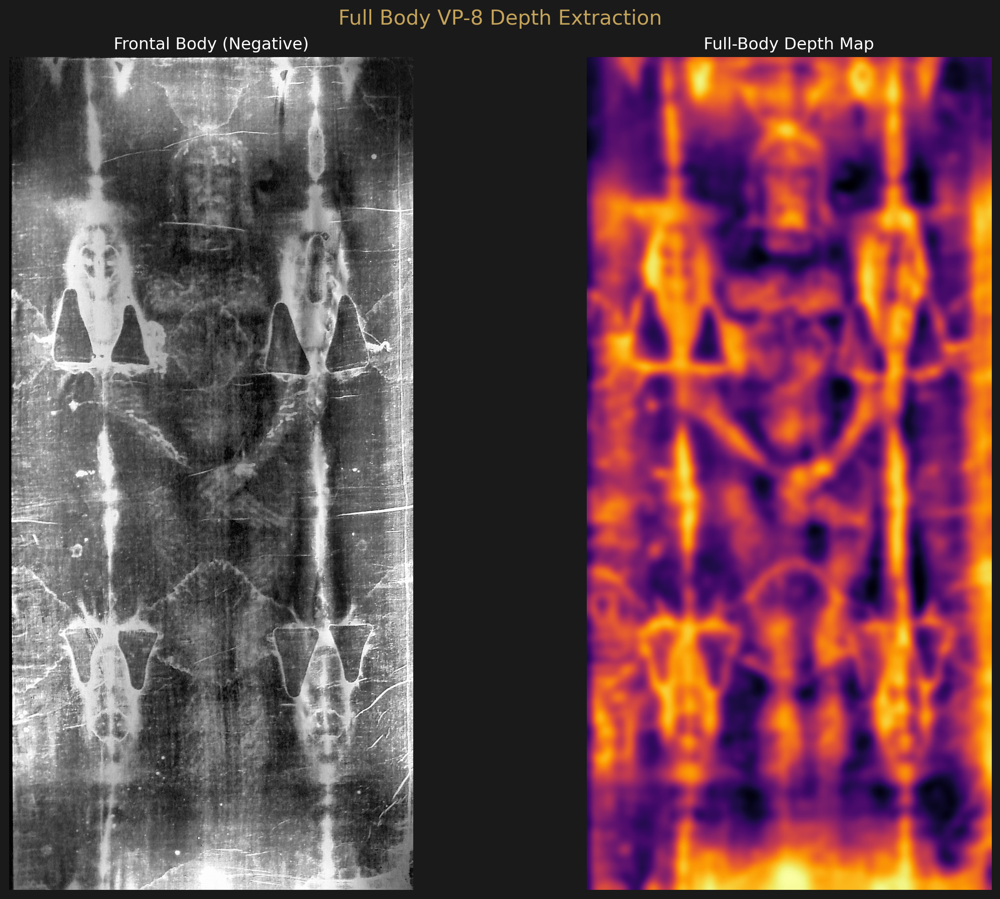
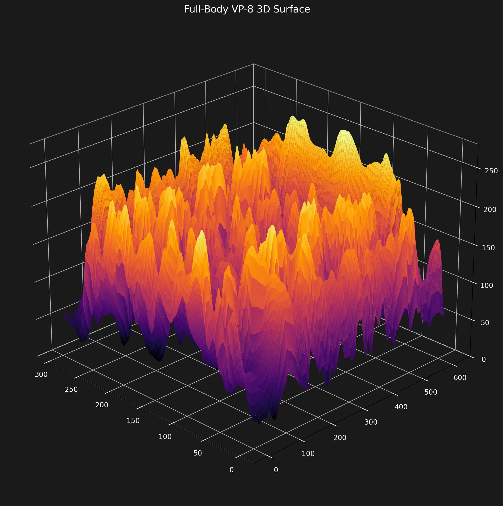
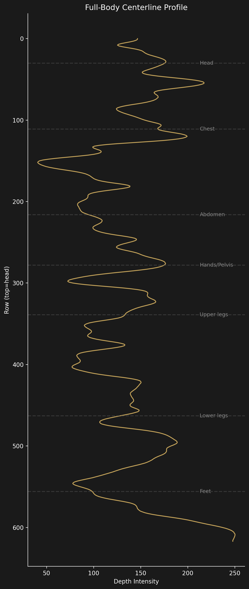
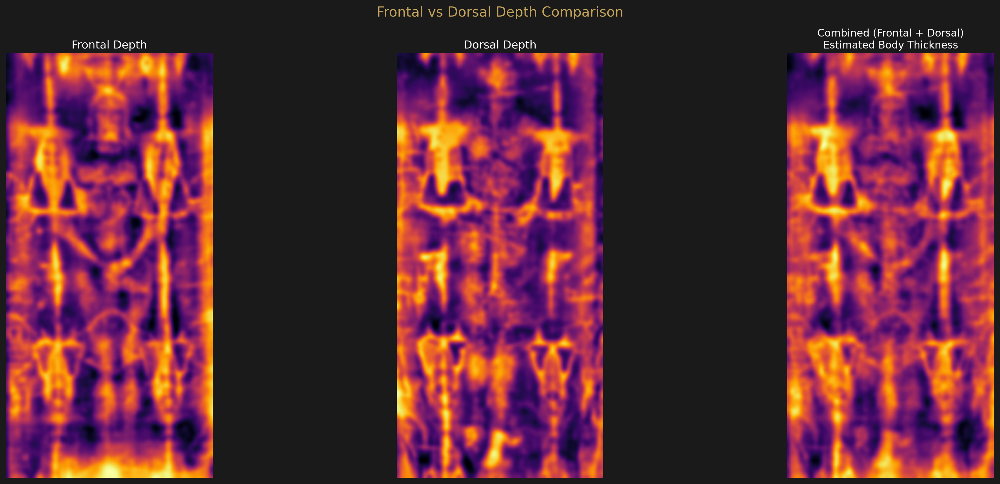
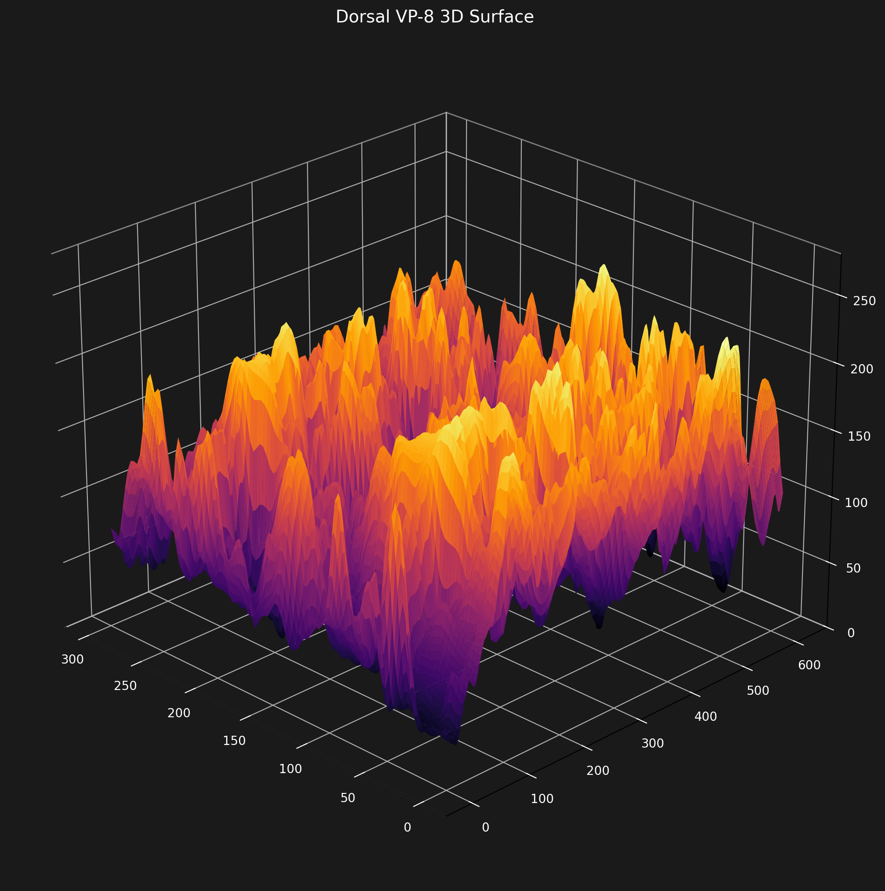
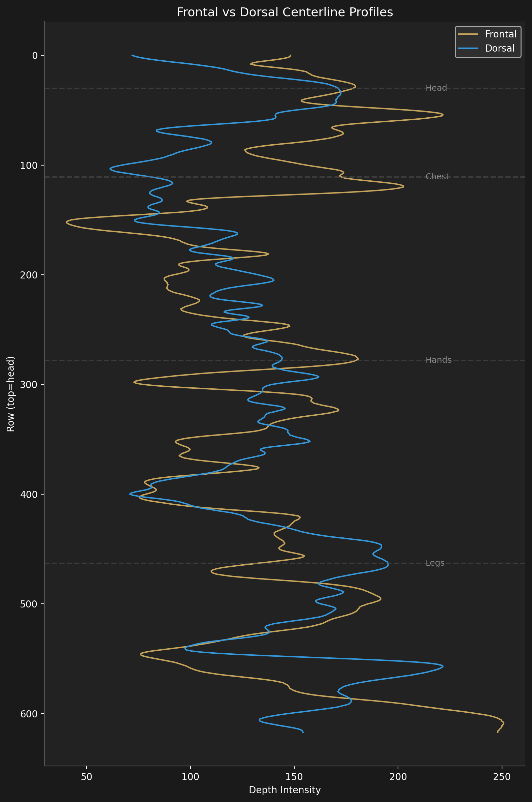
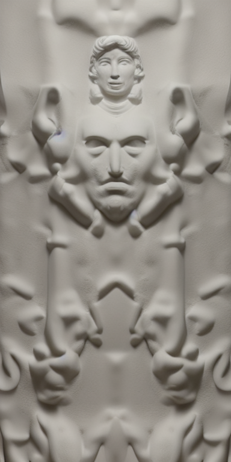

Extended Analysis
Full-Body Depth Extraction
The complete VP-8 depth signal from head to feet — frontal and dorsal images, 3D surfaces, anatomical profiles, and AI sculptural reconstructions.
Source Image
The Enrie 1931 full-length negative captures the entire Shroud: both the frontal (front of body) and dorsal (back of body) images arranged head-to-head in the center. We process each half independently through the same CLAHE + normalization pipeline used for the face studies.
Frontal Body


Anatomical Centerline Profile

Crossed Hands Position
The depth map clearly shows both hands crossed over the pelvis region, with the left hand over the right. This is visible as a bright horizontal band at approximately 45% of the body height. The hand position is consistent with first-century Jewish burial practice and matches descriptions from STURP researchers.
Dorsal Body
The dorsal image — the back of the body — is extracted from the right half of the full-length negative. The same depth pipeline is applied.



Body Thickness Consistency
| Metric | Value |
|---|---|
| Frontal-dorsal centerline correlation | r = 0.249 |
| Combined thickness CV | 0.226 (moderate variation) |
The low correlation (r=0.25) between frontal and dorsal profiles indicates they encode independent but complementary depth information. Where the frontal depth is high (face, chest), the dorsal is relatively low, and vice versa — consistent with a body lying on a flat surface with the cloth draped over it.
Full-Body Sculptural Reconstructions
The full-body depth map is resized to 384×768 portrait format and processed through ControlNet Depth (conditioning scale 0.95) with Stable Diffusion 1.5. Both original and healed (symmetrized) versions are generated.


Limitations
The full-body source image (2370×2321) is significantly lower resolution than the face close-ups used in Studies 1 and 2. The frontal body crop is only ~1125 pixels wide, yielding a 300-pixel-wide analysis grid. Facial detail is minimal at this scale. The full-body reconstructions should be understood as representing overall body posture and proportions, not fine anatomical detail.